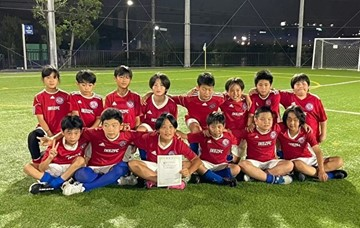
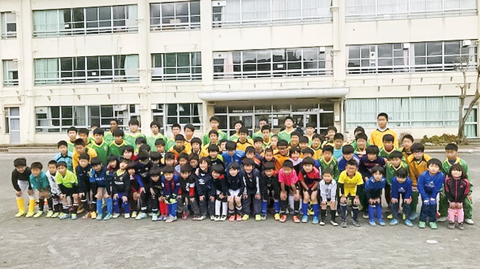

TOKYO Junior Soccer League
第103回 東京リーグ
2026年度 / 年間予定 / 大会情報 / 資料室 / 参加チーム
2026年度 / 年間予定 / 大会情報 / 資料室 / 参加チーム

会場風景Public Documents
リーグ戦要項 規約 規約細則Annual Schedule
開幕 / 組み合わせ公開
A〜Cリーグ進行中
山藤杯
前期終了
最終結果公開
Latest Information
Competition Results

Team Introduction
 旭フットボールクラブ
旭フットボールクラブ

アミーゴフットボールクラブ